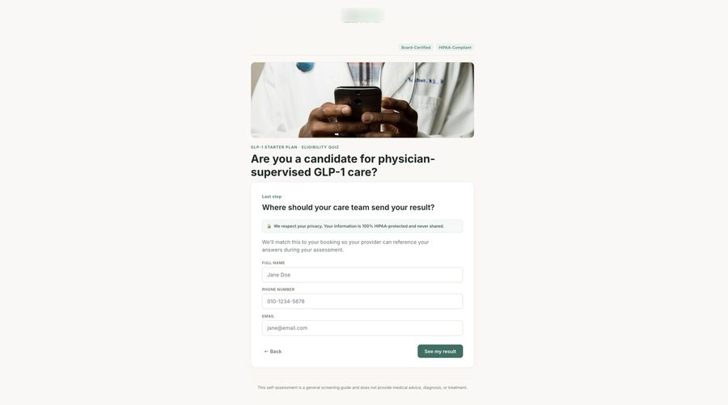

A funnel that outperformed a major agency — on a smaller budget.
My manager wanted broad targeting to maximize traffic. Competitor research told a different story: our real differentiator was on-site, 1:1 provider care — something most telehealth competitors couldn't offer, at a premium price point. I made the case, backed by data, that broad targeting was pulling in price-sensitive traffic that didn't fit a premium service. We rebuilt the funnel around targeting people willing to pay for hands-on care — a four-stage flow where information unfolds step by step instead of overwhelming a visitor on one page. The result: qualified leads at 4× the rate of a major outside agency running a comparable paid campaign for the same company.





Automation behind the scenes